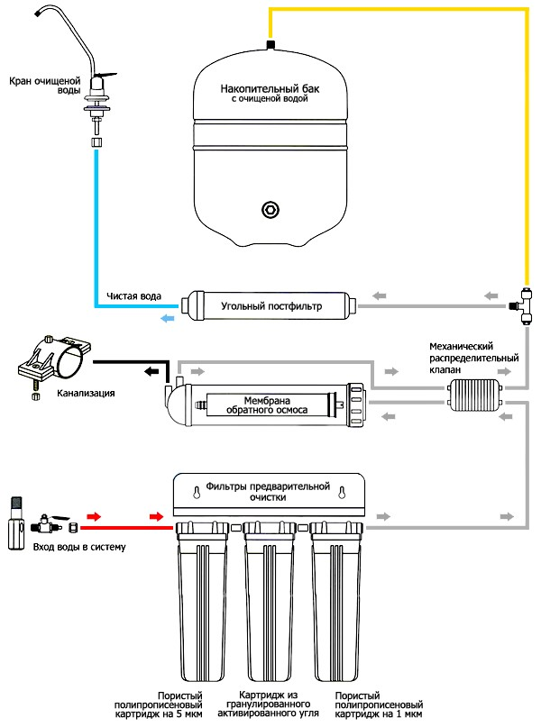

Эта статья для тех у кого есть проточный тройной фильтр, но вы не очень довольны как он работает. Сэкономьте деньги не покупая новую систему обратныого осмоса, ведь можно собрать его в три раза дешевле заводского. Чистая вода должна быть доступна в каждом доме.
Зачем нужно переделывать проточный фильтр в обратный осмос?
Проточные фильтры очищают воду только от механических загрязнений и не трогают тяжелые металлы, вирусы, пестициды, гербициды, соли жесткости, которые потом выпадает в виде накипи на чайнике. Даже если вы установите картриджи умягчения, то он не сделают ее мягкой на длительное время, и сразу же подмешают вам другие примеси. Ионообменная смола не просто забирает из воды соли жесткости (Кальций и Магний), но еще и отдает ионы Натрия (Na). Самым большим недостатком проточных систем с картриджами умягчения является то, что качество воды не стабильно. Вода будет хорошего качества неделю или две, а потом смола будет отдавать то, что собрала на себя. Именно по этому рекомендуют переделать проточный фильтр в фильтр обратного осмоса, который имеет стабильное качество очистки воды.
Перечень деталей для переделки
Чтобы сделать из проточной системы фильтр обратного осмоса, необходимо купить все детали и соединить их в правильной последовательности. Чтобы не ошибиться с подключением, смотрите схему подключения и следуйте строго по ней. Ниже перечень деталей который вам понадобиться.
Схема чтобы собрать обратный осмос
На схеме ниже подробно отражен порядок подключения системы обратного осмоса. Обозначены все основные его элементы.

Схема сборки обратного осмоса - скачайте если это вам надо.
{kind=link}
Видио инструкция
Предлагаю вам посмотреть видео с канала "Сам Себе Сантехник" в котором наглядно показан процесс переделки тройного проточныго фильта в систему обратного осмоса.
Предисловие автора:
Если у вас есть трёхступенчатый проточный фильтр, и вам очень хочется иметь, что-то "по круче" - не спешите заниматься переделкой. На первый взгляд ничего сложного и даже выгодно. Докупил недостающих частей и всё, полноценный осмос готов. Но не всё так просто. Лучше сядьте и подумайте, действительно ли это будет дешевле, чем купить готовую систему в сборе и в каком случае будет дешевле...Необходимые комплектующие:
- Мембрана RO Filmtek Dow 50g ~ 65 бел.руб.
- Корпус для мембраны осмоса ~ 19 бел.руб.
- Ограничитель течения на 450 ~ 3 бел.руб.
- Накопительный бак для осмоса (3 g.) ~ 52 бел.руб.
- Четырёхканальный клапан ~ 8 бел.руб.